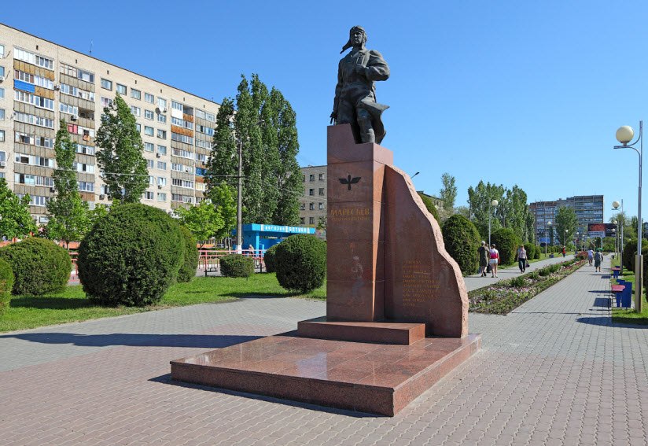

Памятник Алексею Маресьеву
Имя героя Великой Отечественной войны, легендарного летчика, вдохновившего писателя Бориса Полевого на создание «Повести о настоящем человеке», известно каждому россиянину со школьной скамьи. Приехав в Камышин, невозможно не соприкоснуться с образом Алексея Маресьева. На пересечении улиц Ленина и Некрасова стоит величественный примечательный монумент работы Сергея Щербакова при участии группы соавторов. Бронзовая фигура летчика водружена на постамент оригинальной формы. По аналогии с упомянутым романом скульптуру, появившуюся в городе в 2006 году, называют «памятником настоящему человеку». Это дань уважения великой личности и символ памяти и скорби о четырех страшных годах, оставивших свой неизгладимый страшный след в истории Волгоградщины.